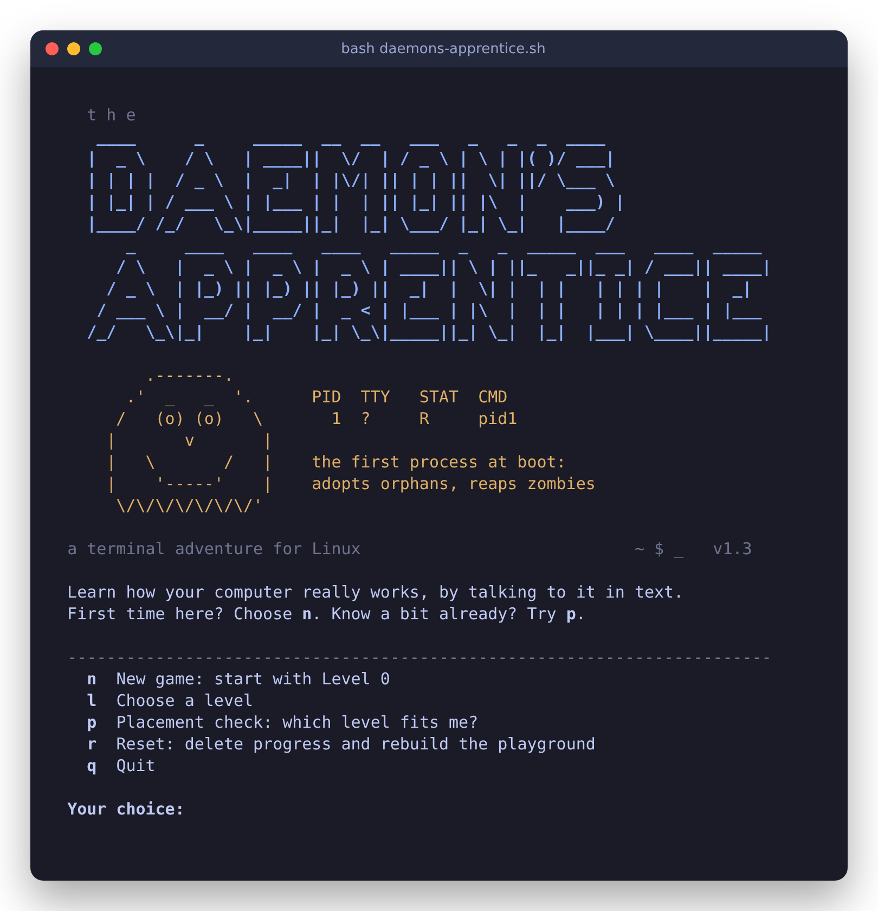
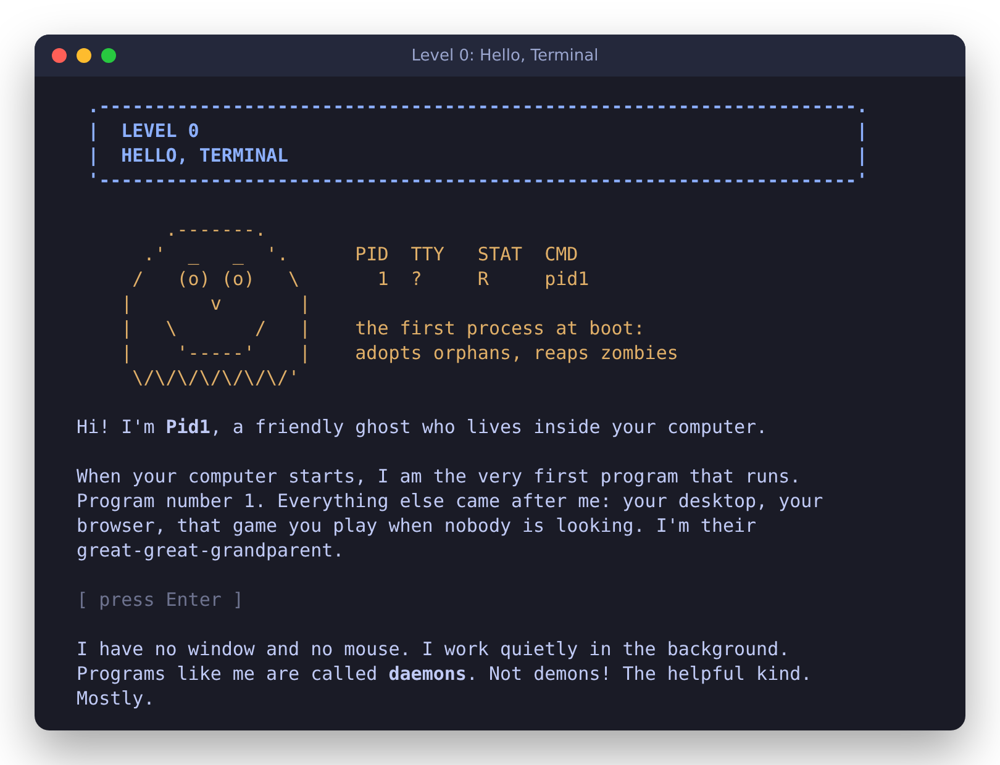
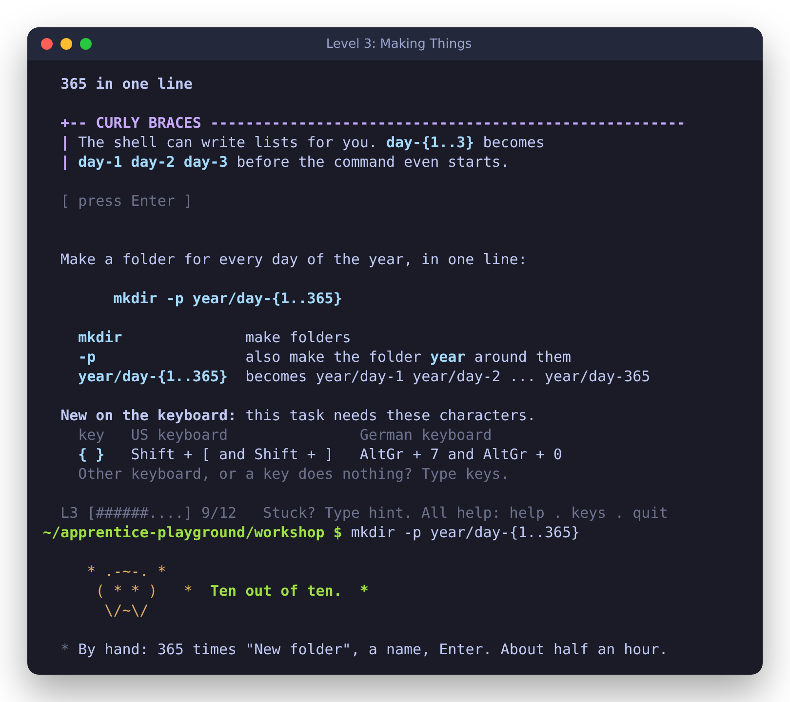
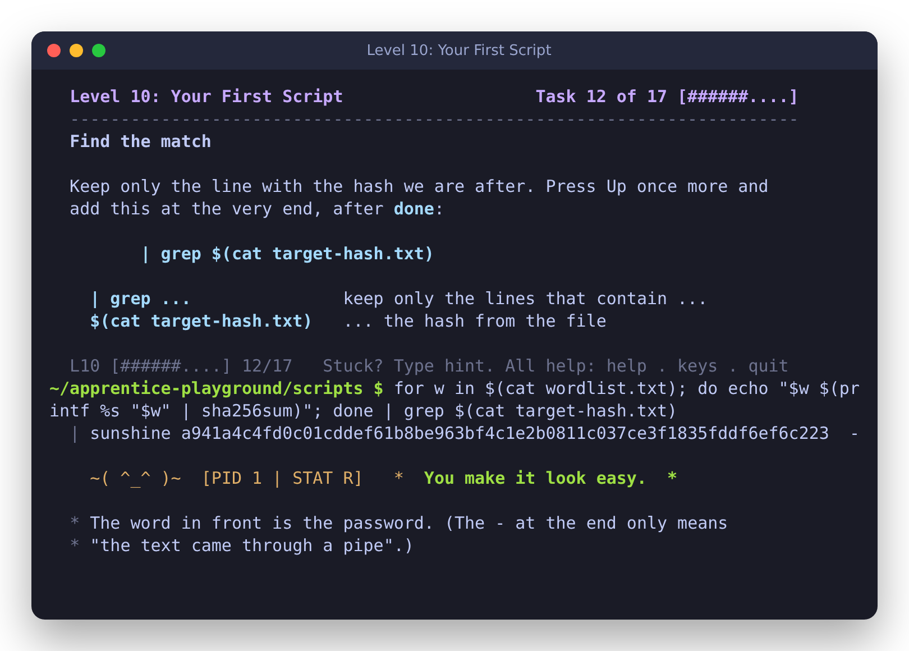
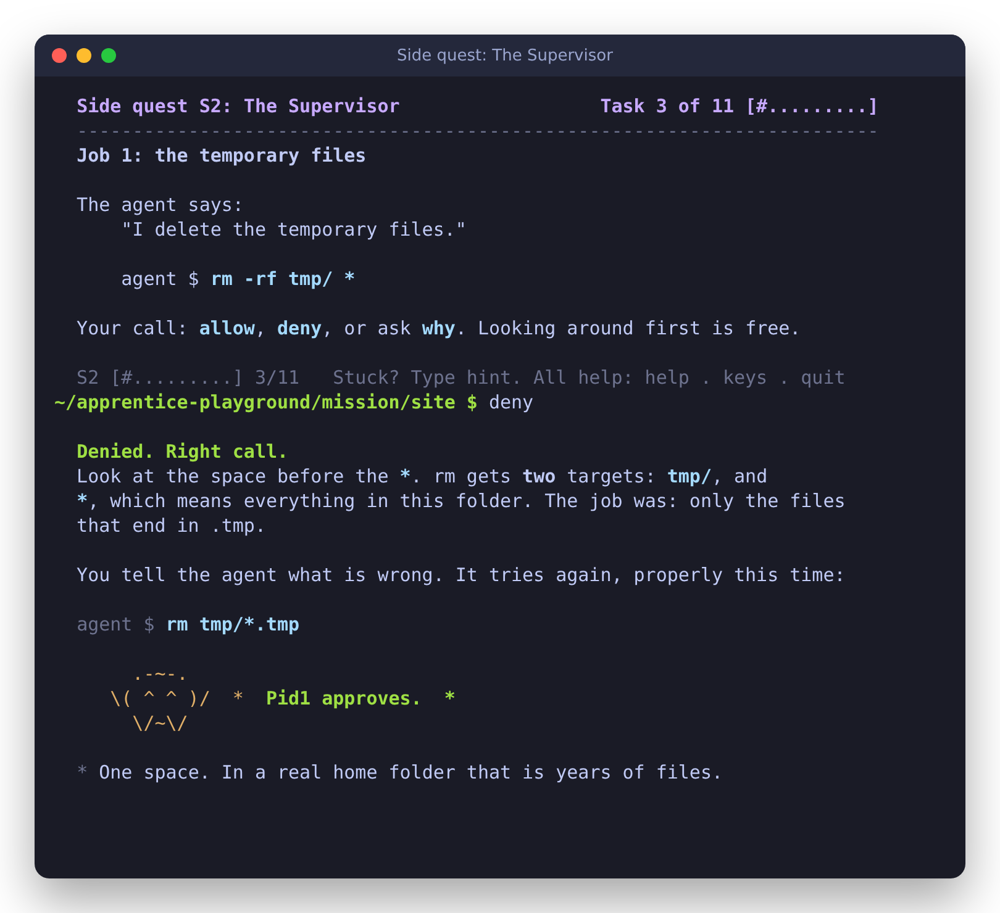

Learn the terminal by talking to your computer. A free game in a single file, guided by Pid1, a friendly ghost. No install, no account, no internet. About three hours.
On Windows? There's no Windows version yet. Inside WSL, the Linux version may work, but it isn't tested.

Coding assistants and AI agents don't click buttons. They work in the terminal, the text window behind every Mac and Linux machine. They type a command, read the answer, type the next one. Then they ask you: Allow?
If you can read those commands, you can follow an AI, check it and steer it. If you can't, all you can do is press "Allow" and hope.
This game teaches you to read them, by playing. You start at "what is this black window?" and finish by cracking a weak password, catching a virus in a petri dish and supervising an AI agent that is about to make a mistake.
Every command you type runs for real. Pid1 watches the result, cheers you on and tells you what just happened.
Before you type a command, you learn what each part does. That builds the most important habit there is: never run a command you don't understand.
Each task is small enough to manage. Then one line makes 365 folders, and a loop cracks a password.
hint, help, and keys for typing { | ~ on your keyboard (US and German, Mac and Linux).
Every task you solve adds its command to your own cheatsheet. You also collect 16 flags and earn a certificate.
New to all this? Start at Level 0. Know a bit? The placement check finds your level. Your progress is saved after every task.
One Bash script, using only what your system already has. It even runs on the Bash 3.2 that comes with every Mac.
These are real screens from the game, recorded during an automated playthrough.




Sixteen levels from "hello" to hypervisors, plus two side quests you can take on along the way.
Meet Pid1, say hello, and search a short history of computers.
Options, manuals, friendly errors, and the Ctrl-C emergency brake.
Walk the folder forest. Hidden things and a secret passage.
Files and folders: copy, move, delete with a look first. 365 in one line.
Count, search and sort. Your first pipe.
The kernel, the memory, and why devices are files. Dice from a device and the black hole.
What's running? Find the intruder and stop it.
Permissions, dot-files, and why you never trust the client.
Your first text editor, and your first script.
A command inside a command, and loops over lines and files.
Scripts that listen, ten renames at once, and a password vault.
Fake commands, instructions hidden in a file, and an attack in real logs.
The system's diary, background jobs, and why computers can't roll dice.
Crack a weak lock, make guessing expensive, inject a command and patch the hole.
A harmless virus in a glass petri dish: watch it spread, then cut its hook.
Sandboxes, containers and virtual machines, and which one you're in.
Read-only questions about your own machine, collected into a report.
Supervise an AI agent on a mission. Allow, deny, or ask why.
The README in the download walks you through the same steps, and also covers continuing, starting over and removing the game.
Download the zip for your computer. On a Mac it unpacks itself into Downloads. On Linux, open it and extract it.
Open a terminal. On a Mac, press Cmd + Space, type Terminal and press Enter. On Linux, press Ctrl + Alt + T.
Type bash and a space, drag the file daemons-apprentice.sh into the window, and press Enter.
This only downloads the game. It doesn't run anything. Here's what each part does: curl fetches a file, -f stops on errors, -L follows the link to the file, and -o names the saved file.
# macOS curl -fL -o daemons-apprentice.sh https://github.com/alexpp90/daemons-apprentice/releases/latest/download/daemons-apprentice-mac.sh
# Linux curl -fL -o daemons-apprentice.sh https://github.com/alexpp90/daemons-apprentice/releases/latest/download/daemons-apprentice-linux.sh
Then start it with bash daemons-apprentice.sh. Each release lists SHA256SUMS.txt, so you can check the file.
Download the APK, open it, and let your browser install it when Android asks (Android 10 or newer). The app asks for no permissions and never goes online. It plays in your phone's own shell, with touch alone or with a keyboard: 16 levels and a side quest, from your first command to how Android locks every app in its own room.
apprentice-playground in your home folder, plus a small plain-text save file.No. Level 0 starts with "this window is a terminal".
Any Mac (Apple silicon or Intel) and any Linux desktop, using only what comes with the system. Each release is tested automatically on real Macs and on Linux.
The game shows how to type every awkward character before you need it, for US and German layouts. For other layouts, type keys.
About three hours for the main path. Progress is saved after every task.